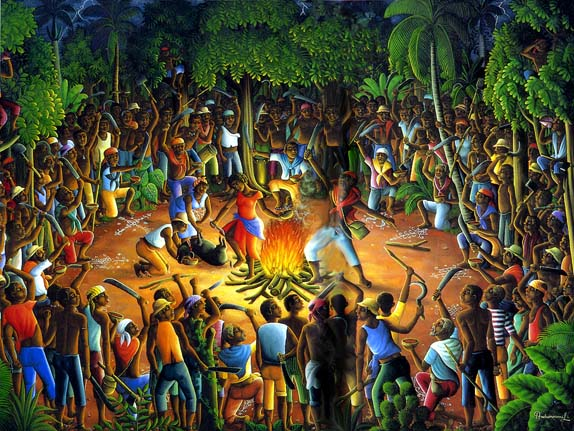
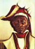

SOUPSONG HAS GONE HARDCOPY!
Buy one (or more) at amazon.com or barnesandnoble.com.
Release date: 12/28/2004.
You'll find this story and recipe in it, From AN EXALTATION OF SOUPS,
copyright © 2004
by Patricia Solley,
Published by Three Rivers Press.
{kind=link}
No wonder this soup has become the touchstone of Haiti's fervent wish for peace and freedom--its symbol of communion and brotherhood--a beacon that shines through today's dark days of poverty and continuing political strife.
*

{kind=link}
Boukman Duffy rallies the slaves
*
Toussaint L'Ouverture abolishes slavery
*
Leclerc sent by Napoleon to crush the revolution
*

Jean-Jacques Dessalines defeats the French
*

Dessalines creates the Haitian flag by tearing the white from France's tricolor
§ Home § Search § SoupTales § Any comments?
Revolution, Independence, and the New Year:
Haiti's Soup Joumou
(e-SoupSong 32: December 1, 2002)
ONCE UPON A TIME, the people of Haiti had special cause to celebrate on New Year's Day. It was January 1, 1804, and after a savage 13-year struggle against their French masters, they had at last achieved independence.
What better way to celebrate than with the very soup they had been forbidden as slaves to eat? Ahhh, soup made from joumou, the delicious and aromatic pumpkin, so different from their usual daily allotment of precisely one ounce of salted meat or fish and one bottle of lemonade. During the independence celebration that happy day, so the story goes, a huge kettle of pumpkin soup was made in the city of Gonaïves, and everyone present was served a bowl. Why? A special communion to forever forge the bonds of brotherhood and commit to a bright national future.
I wish it had been that easy.
Haiti: that "pearl of the Antilles"; that "only successful slave uprising in the history of the world"; that "eldest daughter of France and Africa" that rejected its European heritage--it hasn't been an easy road. In fact, it's been said that far more blood has spilled there than sweat, and there's no counting the buckets of sweat that were shed by 700,000 slaves over 100 years on some 7,000 sugar, coffee, cocoa, cotton, and indigo plantations.
What nation today is routinely excluded from travel guides on the Caribbean? Haiti.
What nation has the lowest literacy rate in the Americas? Haiti.
What people, caught in the crosshairs of historical karma and environmental disaster, have the lowest daily calorie intake in the western hemisphere? Haitians.
From the time King Ferdinand of Spain congratulated Columbus on his Christmas day landfall near Cap Haïtien then declared open season on West Africans for his New World sugar plantations there, Haiti has been a land of warm and gracious people racked by violence and suffering.
Here's some history behind that heavily symbolic kettle of new year's soup: After the 1492 landfall, Spain stayed long enough to kill off the native Arawaks with Old World diseases, import sugar cane cuttings from the Canary Islands, and establish plantations with African slaves...but then left Haiti to the French in 1697 (Peace of Ryswyck) when she found easier pickings elsewhere in the New World.
France wasted no time. Under Kings Louis XIV, XV, and XVI, she transformed those depopulated mountains and valleys into cash crop factories of sugar, indigo, and cotton. How? With 2,500 African slaves in 1698...that jumped to 10,000 in 3 years...and to over 500,000 by 1791--culled largely from tribes in Congo, Angola, Dahomey, Guinea, and Senegal. Their treatment was so horrific, so inhuman, that I haven't the heart to tell. They died like flies and had to be constantly replaced by new shipments from Africa.
So what happened in 1789 when the French people rose up and proclaimed Liberté! Egalité! Fraternité!? After all, the French National Assembly's Declaration of the Rights of Man clearly stated, "Men are born and remain free and equal in rights."
Oh, well. Ahem. National Assemblymen in Paris said, oh yes, we guess that means Haiti too...or at least the freed mulattoes there, those fine sons of Frenchmen and their African slaves. No way, said the racist colonialists in Haiti--and they conducted such a tough lobby that the National Assembly reversed itself in 1791.
Haiti's mulattoes could not believe their ears. It was the last straw. They immediately joined their education, knowledge, and considerable military experience to those 500,000 enslaved Africans--and Haiti exploded in revolt. In August 1791, Vodou priest Boukman Duffy convened slave rebel leaders in the forest overlooking Le Cap. Illuminated by flashes of lightening, they made incantations...they slit the throat of a pig and drank its blood...and they formally swore death to all blancs, which they carried out to the letter with pruning hooks, machetes, and fire. In November, Louis-Jacques Bauvais' mulatto troops attacked and burned Port-au-Prince, slaughtering whites wherever they found them. They sported white ears as cockades in their caps and committed atrocities against women and children I just don't have the heart to tell.
And that was just the start.
Great leaders arose to lead the revolution. Ill-fated Toussaint L'Ouverture, who died in a French prison lamented by poet Wordsworth: "Thy friends are exultations, agonies/And love, and man's unconquerable mind." Henri Christophe. Jean-Jacques Dessalines. And these former slaves led their people first against their colonial masters, in the name of the French Republic. Then against Spain and England, who pounced, chops slavering, when they saw the Pearl of the Antilles slipping from French hands. Then, finally, against France herself, when First Consul Napoleon sent brother-in-law Leclerc and 55,000 crack officers and men instructed to, as he confided to foreign minister Talleyrand, annihilate the government of blacks in Haiti and restore slavery at the first opportunity. "Rid us of these gilded Africans," Napoleon later said, "and we shall have nothing more to wish."
Thirteen long years, all told, of tit-for-tat torched cities, slit throats, scorched earth, attacks, betrayals, mass executions, sieges, torture, encirclements, and despair, not to mention 10,000 deaths from malaria and yellow fever. Dessalines' ultimate winning strategy: koupe tèt, boule kay, cut off the heads, burn down. In the end, some 300,000 Haitians died and 50,000 French--and in the end, the French were defeated. General Rochambeau was given 10 days to pack up his army and ship home.
Which brings us back, harrowed, to the dawn of 1804 and that kettle of soup joumou.
When the last French ship had cleared Le Cap, Dessalines sent word to Gérin at Les Cayes: "There is no more doubt, mon cher général, the country is ours, and the famous who-shall-have-it is settled." In Gonaïves, he divided up the war chest--8 gourdes per man; he dispersed his army to the principal towns; and he sat down with his generals "to ratify in ink what they had written in blood."
On January 1, 1804, people started gathering at dawn at Gonaïves' Place d'Armes. Dessalines mounted the Autel de la Patrie to speak. He recited the cruelties of their enslavement in Kreyol, so everyone could understand him, and he declared that Haitians would forever after live free and die free. "Long live independence!" he shouted at the end of the ceremony, having no idea what a difficult life it would be. Cannons were fired; church bells, rung; people cheered; and, they say, kettles of fragrant soup joumou perfumed the air, ready to be ladled up in a mass communion.
It's a great image. No wonder this soup has become the touchstone of Haiti's fervent wish for peace and freedom--its symbol of communion and brotherhood--a beacon that shines through today's dark days of poverty and continuing political strife. One thing is sure, on January 1, Haitians around the world make it and eat it and share it precisely to remember the past and to hope for the future.
Oh, and there are lots of other stories about soup joumou too. Some say, pure and simple, it's a good luck charm for the new year--and you better eat it cause it's bad luck if you don't. Others say, no, it's really to cleanse and purify the body for the new year...and don't eat anything else til midnight, when you can eat an orange and count your luck in the coming year by its number of seeds. Others yet say it honors the Vodou god Papa Loko, keeper of African spiritual traditions, and that it reliably "lifts up a man's soul and makes him prophesy."
There's something to that last comment. This is a fabulous stuffed soup--bright yellow-orange and sensuously African with an opulence of meat, vegetables, and the Caribbean bite of lime and chilis. In Kreyol, you'd say it was stuffed with vyann, joumou, kawot, seleri, zanyon, nave, pomdete, malanga, and shou...and spiced with piman bouk, ten, lay, and sitwon.
Soup Joumou (serves 6)
- meat rub made by grinding 4 garlic cloves, 1 teaspoon thyme, 1/4 teaspoon pepper, and 2 sliced scallions into 2 teaspoons of salt
- 1-pound piece of beef stew meat
- 3 quarts water (more, later in the cooking, as needed for a soupy consistency)
- 1 scotch bonnet or habanero pepper, left whole with stem
- 2 pounds pumpkin (or winter squash like butternut), peeled and chopped
- 2 carrots, peeled and sliced
- 2 stalks celery, sliced lengthwise and cut into pieces
- 1 large onion, cubed
- 2 medium turnips, peeled and cubed
- 2 medium potatoes, peeled and cubed
- 1 pound malanga, peeled and cubed (if not available, substitute 3 more potatoes)
- 1 pound cabbage, sliced fine and chopped
- 1/4 pound vermicelli or other thin pasta, broken into shorter lengths
- 2 limes, juiced
2. Bring the water to a boil in a large soup pot, add the meat and chile pepper, cover, reduce heat, and simmer for 2 hours.
3. Add the carrots and pumpkin, cover the pot, and cook until very tender, about 20 minutes. Remove meat and pepper from the pot, discarding the pepper. Puree the pumpkin and carrots in the broth and pour back into the pot. When the meat is cool enough to handle, cut it into cubes and add back into the pot.
4. Add the celery, onion, turnips, potato, and malango cubes to the soup, bring to a boil, then reduce heat and simmer for 15 minutes. Thin the broth with as much water as needed--it should not be too thick.
5. Scrape in the cabbage and cook 15 more minutes. Thin again with water, as needed. 6. Add the broken vermicelli and cook until it is tender. Thin again with water, as needed.
7. Taste and correct for seasoning with salt and pepper. Stir in the lime juice.
8. Turn off the heat, cover the pot, and let sit until ready to serve.
Best regards...and wishing you all the blessings of this holiday season!
Pat Solley
Resources: Alix's Corner at Discover Haiti website, Madison Smartt Bell's All Soul's Rising, Roseline Ng Cheong-Lom's Haiti, Devra Dedeaux' Sugar Reef Caribbean Cookbook, James Ferguson's Traveler's Literary Companion to the Caribbean, Robert and Nancy Heinl's Written in Blood: The Story of the Haitian People, 1492-1971, National Assembly of France's "Declaration of the Rights of Man and of the Citizen," 8/26/1789, The Oxford Book of Caribbean Short Stories, Mirta Yurnet-Thomas' A Taste of Haiti, William Wordsworth's Collected Poetry, and an assortment of encyclopedias, articles, and websites.
* * *NEXT MONTH: Soup and the Sniffles